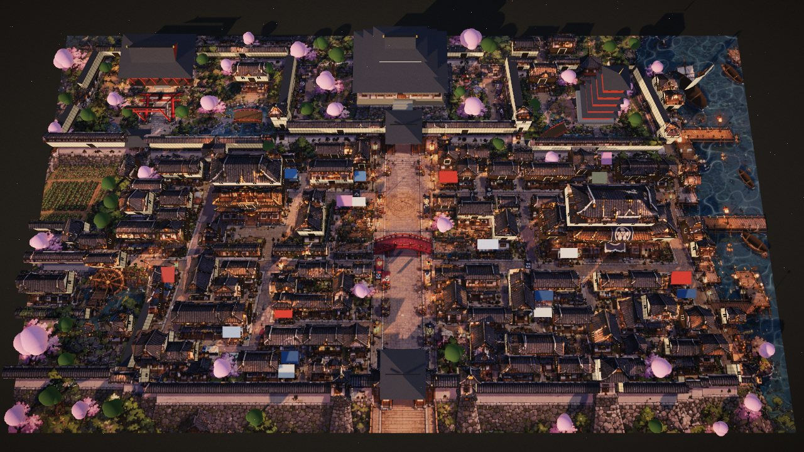
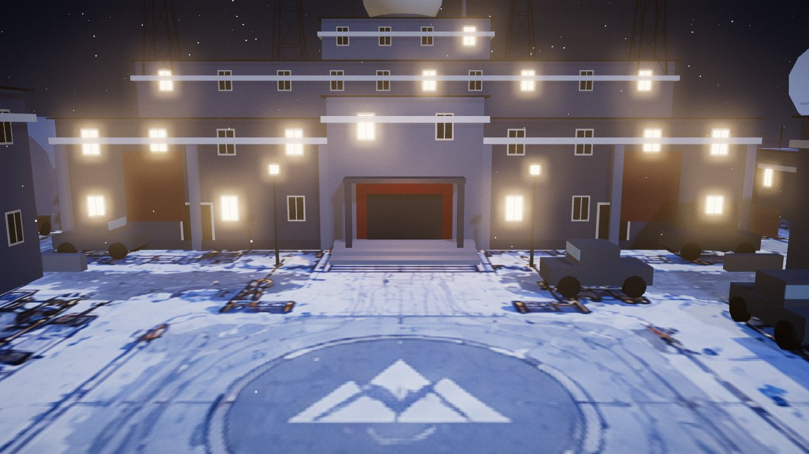
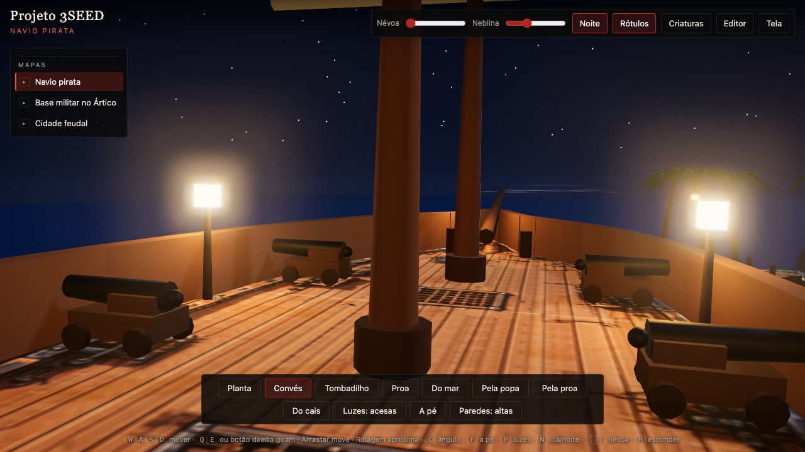
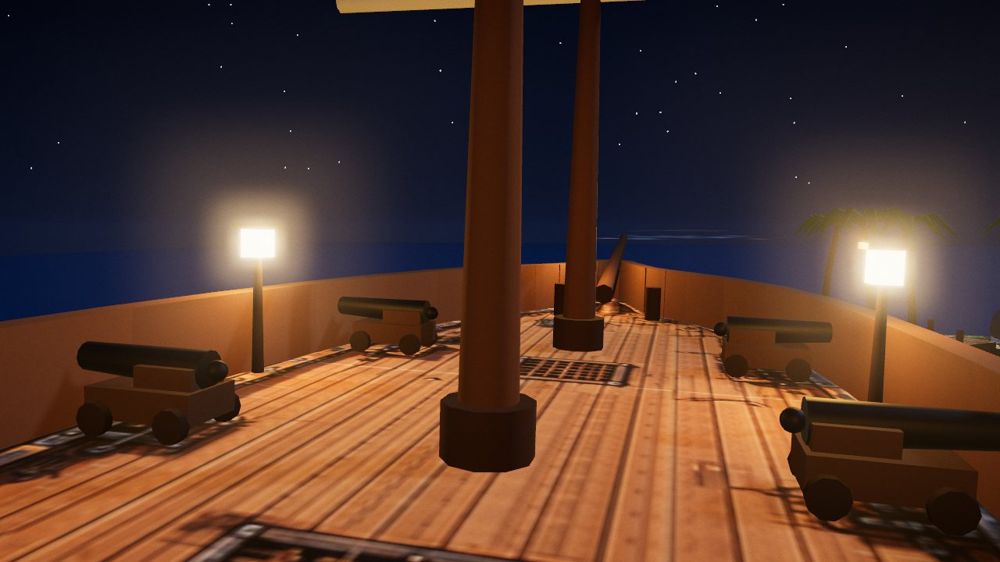
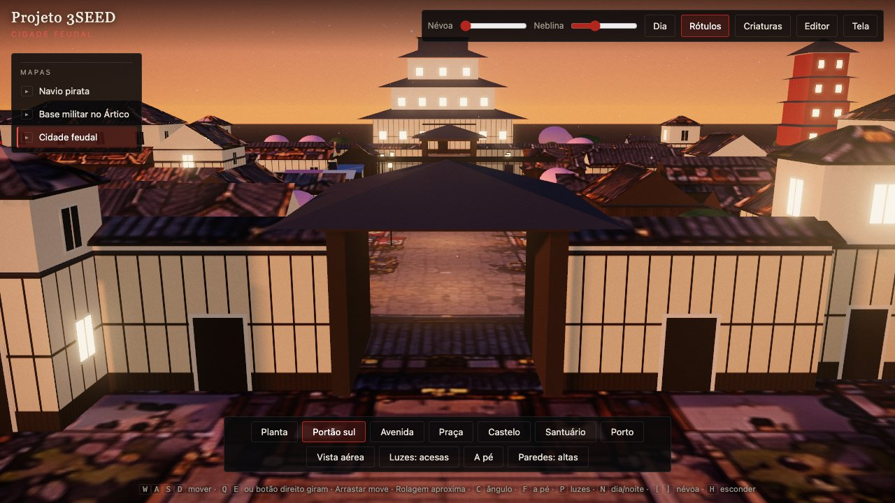
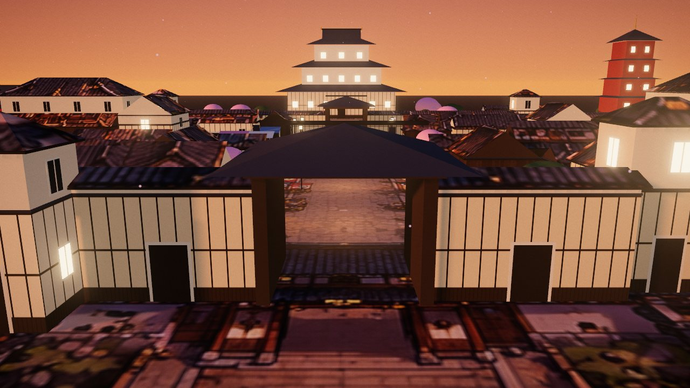
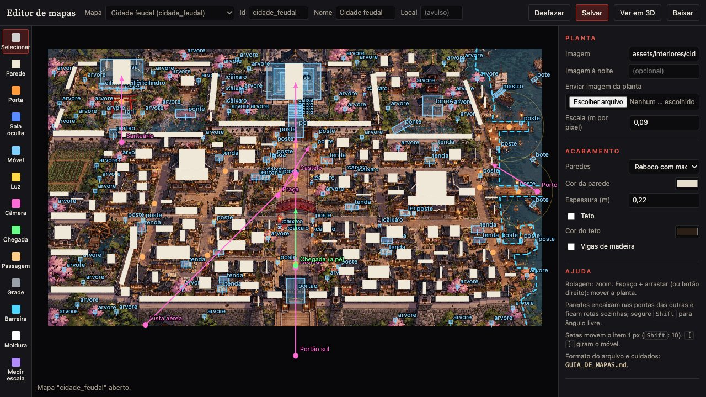

Transforma a imagem de uma planta, de um navio ou de uma cidade num mapa 3D para jogar: câmeras de cena, portas que abrem, dia e noite, névoa e uma segunda tela sem interface para os jogadores. Roda no navegador, sem instalar nada além do Python.
Cada mapa é uma imagem vista de cima, que vira o chão, mais um arquivo (mapas/<nome>.json) que diz o que fica em 3D por cima dela: paredes, portas, móveis, luzes, prédios, árvores, câmeras e passagens para outros mapas. As posições são lidas na própria imagem, em pixels; os tamanhos são em metros.


Cada mapa tem ângulos prontos (a entrada, a praça, o convés) e uma vista de planta. Também dá para andar livre, ou descer "a pé", na altura dos olhos.
Cômodos começam escuros e aparecem quando a porta abre. Passagens levam a outro mapa com a animação de uma porta abrindo no escuro.
Dia, fim de tarde e noite (com lua), névoa rasteira, neblina, luzes que acendem, água que se mexe, neve.
O mestre usa a tela com interface: troca de câmera, liga a noite, abre portas, põe criaturas. O botão Tela abre uma segunda janela sem interface, que repete tudo o que o mestre vê; arraste-a para a TV ou o segundo monitor, para os jogadores.




A segunda tela funciona no mesmo computador e no mesmo navegador. Para mostrar em outro aparelho, compartilhe a janela dela numa chamada de vídeo.
| Tecla | O que faz |
|---|---|
| W A S D | Andar (com Shift, mais rápido) |
| Q E ou botão direito | Girar e olhar em volta |
| Arrastar · rolagem | Mover a vista · aproximar e afastar |
| Espaço · Shift + Espaço | Subir · descer a câmera |
| C | Próxima câmera do mapa |
| F | Descer "a pé", na altura dos olhos |
| N | Dia e noite |
| P | Acender e apagar as luzes |
| T | Paredes altas ou baixas (nos interiores) |
| [ ] | Menos e mais névoa |
| H | Esconder a interface |
| Clique | Abrir e fechar portas; seguir uma passagem (o marcador na porta de um prédio) |
Há três caminhos. Em todos, o ponto de partida é a imagem: a qualidade do mapa depende mais das imagens do que de qualquer ferramenta.
Ponha a imagem em assets/interiores/ e peça a um assistente de IA que roda comandos no terminal (Claude Code, Codex, Gemini CLI, Cursor ou outro) que crie o mapa. As instruções que ele segue estão em AGENTS.md: conferir a imagem, medir a escala, escrever o arquivo, validar e tirar fotos em 3D. Ele entrega uma primeira versão e diz o que foi chute. Logo depois de clonar, peça que rode python3 ferramentas/testar.py --rapido: confere em uns 10 segundos que as ferramentas funcionam nesse computador.
Abra o editor, envie a imagem, meça a escala com "Medir escala" e desenhe paredes, portas, salas ocultas, móveis, luzes, câmeras, a chegada e as passagens. "Salvar" grava em mapas/; "Ver em 3D" abre o resultado.
Um mapa é um JSON simples. O formato inteiro, campo por campo, está em GUIA_DE_MAPAS.md. Um mapa escrito à mão abre no editor para ajustes, e vice-versa.

| Para | A imagem | Onde guardar |
|---|---|---|
| Um interior casa, escola, bunker, andar de prédio | A planta vista reta de cima (90°), com o piso, os móveis e o topo das paredes, as portas como vãos. Sem rótulos, sem sombras. Uma versão de noite, se quiser, com exatamente o mesmo enquadramento. | assets/interiores/ |
| Uma cena ao ar livre navio, cais, acampamento, clareira | A cena vista reta de cima. | assets/interiores/ |
| Um lugar inteiro cidade, vila, base | Em camadas: o chão limpo (ruas, grama, água e uma laje vazia onde fica cada prédio, nada com altura); uma folha de cada prédio importante (frente, lateral, fundos e telhado de cima, lado a lado, sobre fundo liso); e um atlas de texturas (tijolo, pedra, telha, grama). | assets/interiores/, assets/predios/, assets/texturas/ |
O README.md traz os pedidos prontos para a IA de imagem (chão limpo, folha de prédio, atlas, interior), já com as exigências que evitam os defeitos mais comuns.
Uma ilustração: cena vista de dentro ou de fora, com teto, céu ou ponto de fuga. Como a imagem vira o chão, as paredes e os móveis ficariam pintados deitados. Uma planta inclinada (perspectiva) serve depois de endireitada.
python3 ferramentas/grade.py imagem.png rascunho/g.png --passo 100 e olhe.mapas/indice_local.json (o editor faz isso sozinho).python3 ferramentas/validar.py mapas/meu_mapa.json aponta os erros; python3 ferramentas/foto.py mapas/meu_mapa.json rascunho/f.png --camera 1 mostra o mapa em 3D sem abrir janela. Repita até ficar bom.O passo a passo acima vale para todos. O que muda de um tipo para outro é o preparo da imagem e os campos principais; o README.md ("Cada tipo de mapa") e o GUIA_DE_MAPAS.md trazem os detalhes.
| Tipo | Preparo | No arquivo |
|---|---|---|
| Interior reto de cima casa, escola, bunker, um andar | comparar.py se houver versão de noite | paredes com vãos, portas, salas ocultas, móveis grandes, uma luz por cômodo |
| Interior com a face das paredes parede como faixa larga, com quadros | — | Cada parede pela faixa que ocupa; quadros e lousas como caixa fina |
| Planta em perspectiva prédio em trapézio | endireitar.py com os quatro cantos do piso | Como "face das paredes" |
| Cena ao ar livre navio, cais, clareira, praia | apagar.py nas velas e sombras pintadas | ceuAberto, corEntorno, agua; navio e cais em plataformas (exemplo: navio_pirata) |
| Lugar inteiro, uma pintura só cidade, vila, base | apagar.py --predios, relevo.py, espalhar.py | Cada telhado em predios, muralhas em faixa, árvores e postes como peças (exemplos: base_artica, cidade_feudal) |
| Cidade em camadas chão limpo, folhas, atlas | folha.py e folha.py --alinhar em cada folha | Prédios importantes em folhas, casas pequenas em predios com as texturas do atlas |
| Mapa de batalha com quadrícula | quadricula.py; apagar.py --ladrilhar na rosa dos ventos | Como o tipo da cena; a casa da grade costuma valer 1,5 m |
| Maior que a pintura perseguição, mata em volta | ampliar.py ou compor.py | A escala continua a mesma; só se anda até 2 m além da imagem |
| Vários andares | Um mapa por andar | passagens de um para o outro e uma chegada em cada |
| Problema | Como aparece | O que fazer |
|---|---|---|
| Perspectiva | O prédio é um trapézio, a parede do fundo aparece em pé, os móveis encolhem para o fundo | endireitar.py com os quatro cantos do piso |
| Quadrícula | A grade de mapa de batalha por cima do chão | Peça sem grade, ou tire com quadricula.py |
| Pintura menor que o mapa | O lugar acaba na borda da imagem (só se anda até 2 m além dela) | ampliar.py aumenta o chão em volta, sem mudar a escala; compor.py espalha as partes num chão grande, com trilhas |
| Lateral espelhada, chaminé fora do lugar | Na folha, a varanda ou a chaminé fica de um lado numa vista e do outro em outra | folha.py --alinhar mostra; folha.py --limpar ... --espelhar desvira |
| Folha em pergaminho | Moldura, manchas e rótulos em volta das vistas | folha.py --limpar ... --papel |
| Fundo sujo na folha | Pedaços da referência ou névoa em volta do prédio | folha.py --limpar ... --nevoa 6 |
| Dia e noite desalinhados | As linhas não continuam de uma faixa para a outra | Confira com comparar.py; se não baterem, use só o dia |
| Algo pintado que atrapalha | Uma vela no convés, um rótulo, a rosa dos ventos | apagar.py cobre com um pedaço vizinho do chão |
Ficam em ferramentas/, usam só o Python padrão e explicam o uso com --help.
| Ferramenta | Para que serve |
|---|---|
grade.py | Grade numerada sobre a imagem, para ler as posições |
validar.py | Aponta erros e avisos do arquivo do mapa |
previa.py | Desenha o mapa por cima da imagem, em 2D |
foto.py | Fotografa o mapa em 3D sem abrir janela (precisa do Google Chrome) |
endireitar.py | Endireita uma planta em perspectiva |
quadricula.py | Tira a grade de um mapa de batalha |
ampliar.py | Aumenta o chão em volta da pintura |
folha.py | Acha as vistas de uma folha de prédio, limpa folhas sujas ou em pergaminho e confere lateral espelhada (--alinhar) |
apagar.py | Remenda a pintura com pedaços dela mesma |
espalhar.py | Espalha árvores onde o chão é verde e postes na calçada |
relevo.py | Ergue em blocos o que tem certa cor (sebes, muretas) |
comparar.py | Confere se dia e noite têm o mesmo enquadramento |
compor.py | Espalha as partes de uma pintura num chão grande, ligadas por trilhas |
figuras.py | Recorta as poses de uma folha de personagem, com fundo transparente |
objeto.py | Monta o atlas de um objeto 3D (carro, armadilha) a partir de quatro vistas |
validar_campanha.py | Confere as criaturas e objetos da campanha (o mesmo que abrir conferir.html) |
testar.py | Testa as ferramentas e o programa de ponta a ponta; rode antes de publicar uma mudança |
README.mdComo rodar, o que preparar, os pedidos prontos para a IA de imagem e as regras aprendidas fazendo mapas.
GUIA_DE_MAPAS.mdO formato do arquivo, campo por campo: paredes, portas, plataformas, prédios, folhas, peças do kit, luzes, câmeras.
AGENTS.mdAs instruções para uma IA criar o mapa a partir de uma imagem, com o que conferir antes e o que avisar na entrega.